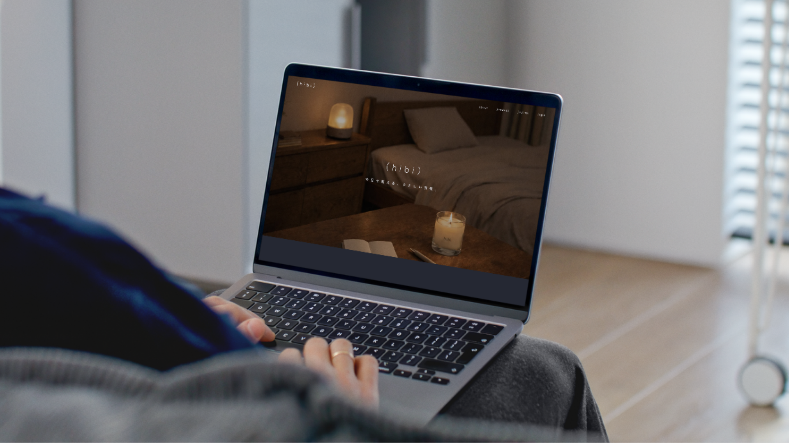
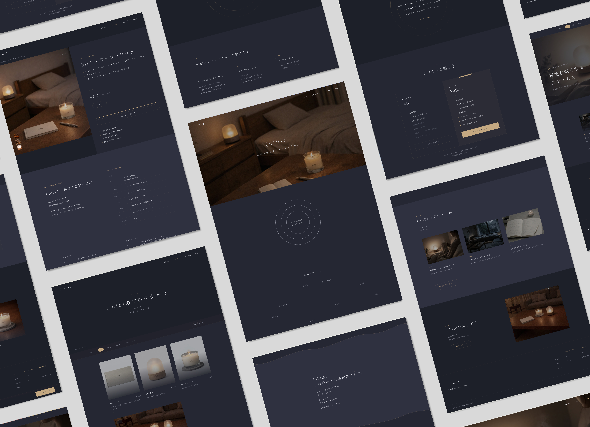
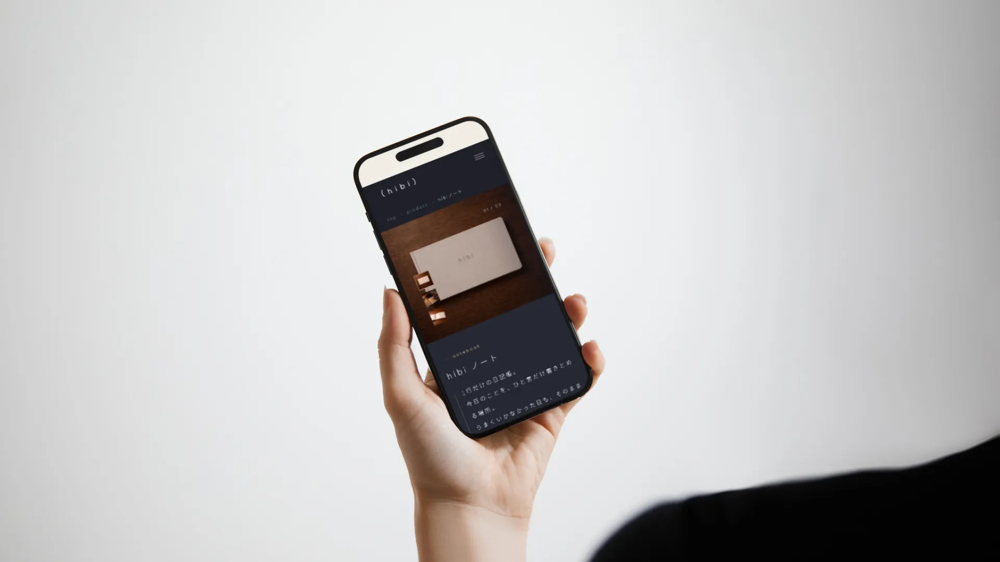

概要
セルフケアブランド hibi 様（架空）のブランドサイトを制作しました。
hibiは「今日を整える、やさしい習慣」をコンセプトに、それぞれの1日の終わりに寄り添うブランドです。導入のデジタル体験からプロダクトに結びつけることで、日常の習慣へと自然につながる導線を設計しました。落ち着いた配色と装飾を最小限にした余白のあるデザインで、ゆったりと呼吸できるような空気感を表しています。

- 忙しい日常の中で、1日を振り返る習慣を持つきっかけが少ない
- セルフケア商品は機能説明が中心になりやすく、思想や体験価値を伝えるブランドサイトがない
- 1日に区切りをつけ、ありのままの自分を受け入れられる体験ができるブランドサイトをつくる
- デジタル体験とプロダクトを組み合わせ、日常の中で続けられるセルフケア習慣を提案する
- 都市部で働く20代後半〜30代の男女
- SNSや仕事などで疲れを感じていて、リラックスできる習慣を求めている人
- サステナブルな素材・シンプルなデザインに惹かれるライフスタイルの人
- それぞれの「1日の終わり」にそばにあるブランド
- 誰かにとっては23時、誰かにとっては5時—— 1人ひとりの気持ちがほどける瞬間に寄り添う
- 応援しない、正論を言わない、そのままを受け止める「小さな習慣」を届ける

デザイン設計
1日の終わりの静寂や心地よさをイメージできるよう、深いネイビーを基調に、キャンドルやランプの光を彷彿とさせるゴールドや柔らかなベージュをアクセントカラーに採用しました。書体は角ゴシック体を使用し、余白を大胆に活かすことで、ユーザーが呼吸を整えられるような「余白のある暮らし」を視覚的に表現しました。aboutセクションの境界には揺らぎのある波線と流れ星をあしらい、やさしく包み込んでくれる夜の世界観を演出しています。商品の写真はあえて光を抑えたローキーなトーンで統一し、実際に夜の部屋で使用した際の没入感や情緒的な雰囲気がダイレクトに伝わるよう工夫しました。
情報設計
「今日を整える」というブランド体験をシームレスに提供するため、初めにデジタル体験を配置しました。導入のデジタル体験から、コンセプト、プロダクト、ジャーナルと続く構成にすることで、ブランドの思想から具体的な商品、そして日常の習慣へと段階的に理解が深まる流れを設計しています。また、ジャーナルではブランドの背景や思想を伝え、ユーザーがhibiの価値観に共感できるようなコンテンツ設計としました。各所に配置されたボタンやフォームは、世界観を壊さないよう極めてシンプルにまとめつつも、視認性の高い配色で迷いなく操作できるようにしています。下層ページに至るまで一貫したトーンを維持することで、サイト全体がひとつのリラックス空間として機能するように構築しました。

ブランドの展開
ナイトルーティーンとして生活に入り込む習慣設計を軸に収益化を考えました。入口として無料のデジタル体験を提供し、hibiノートやランプ、キャンドル、ピローミスト、ティー、お香などのプロダクトへ。サステナブルな素材を用いた消耗品中心の展開により、日常の中で自然とリピート購入が生まれるしくみとしました。有料会員では体験ログが自動保存され、月末にPDF化、年1回冊子として自宅に届きます。会員はメールアドレスでログインし、そのアドレス宛にhibiの思想に共感する企業の商品やサービスを厳選して紹介します。さらに睡眠アプリやウェルビーイング企業との連携により、デジタルと物理を横断したブランド拡張を設計しました。
制作の経緯
SNSの普及により、無意識のうちに他人と比較してしまい、自分を肯定できなくなる感覚は、多くの人が抱えているものだと感じています。仕事や日常の中でも、気持ちを置き去りにして時間だけが過ぎていくことは少なくありません。そうした現代においては、誰かに励まされたり、正解を提示されることよりも、そのままの自分を受け止める時間が必要なのではないかと考えました。こうして、1日の終わりにそっと寄り添う習慣を届けるブランドとして、hibiが誕生しました。